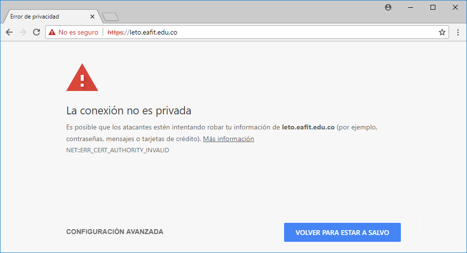
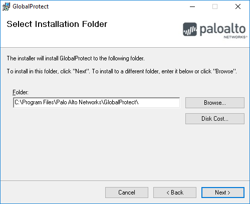
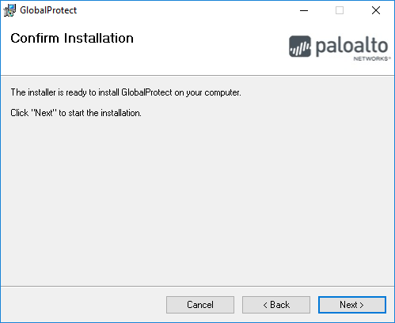
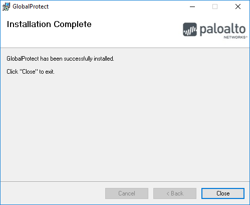
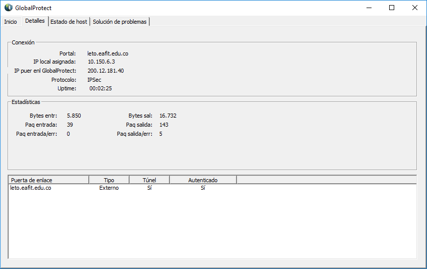
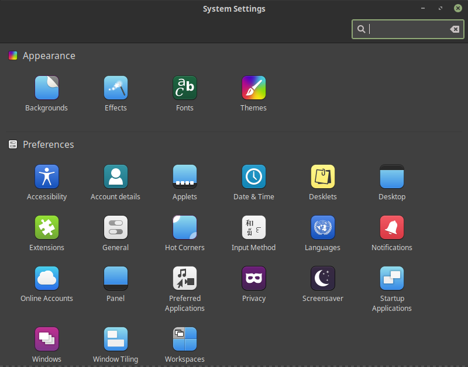

Windows and Mac OSX¶
To configure the VPN on Windows and Mac OS X systems, you must follow exactly the same procedure. Here are the steps to download and configure the VPN client:
Open your favorite browser and go to https://leto.eafit.edu.co
Accept the not issued certificate

Log in with your username and password given by EAFIT or Apolo’s staff

- Download and install the version of Global Protect client according to your operating system

Install the Global Protect application

Choose where to install it, take into account your permissions on the system
Finish installation
Close installation
Launch the Global Protect application and fill the portal input Portal with leto.eafit.edu.co

Accept the untrusted certificate

Fill the fields with the following information:

Portal: leto.eafit.edu.co
Username: The username assigned by the Apolo’s system administrator.
Password: The password used to log in to the clusters.
Warning
The password sent to your email is one-time password, the first time you login to our clusters the system will ask you for changing the password, after that the new password will be used to log in to the VPN.
Warning
Remember your password will expire every three (3) months.
Once connected to the VPN, you will see the word Connected as shown in the image

You can see some network parameter in the Details tab

Linux¶
Note
Depending on your distribution this procedure could change.
To configure the VPN on Linux, you have to use your package manager to install a Cisco Compatible VPN client. The most
common client is vpnc, which is embedded on a set of scripts in the package. Usually, the package with these scripts is
called network-manager-vpnc. If you use Gnome or a Gnome compatible window manager you should install the
network-manager-vpnc-gnome and vpnc packages. If you use KDE or a KDE compatible window manager you can install the package kvpnc.
$ sudo apt search vpnc
[sudo] password for user:
p kvpnc - frontend to VPN clients
p kvpnc:i386 - frontend to VPN clients
p kvpnc-dbg - frontend to VPN clients - debugging symbols
p kvpnc-dbg:i386 - frontend to VPN clients - debugging symbols
p network-manager-vpnc - network management framework (VPNC plugin core)
p network-manager-vpnc:i386 - network management framework (VPNC plugin core)
p network-manager-vpnc-gnome - network management framework (VPNC plugin GNOME GUI)
p network-manager-vpnc-gnome:i386 - network management framework (VPNC plugin GNOME GUI)
p vpnc - Cisco-compatible VPN client
p vpnc:i386 - Cisco-compatible VPN client
p vpnc-scripts - Network configuration scripts for VPNC and OpenConnect
$ sudo apt install vpnc network-manager-vpnc-gnome
Once the correct package is installed according to your distribution, you can proceed to configure the VPN client.
Warning
It is strongly recommended to log out and log in before to start the following steps because there are some cases where the VPN connection does not work until log out or reboot is performed after the package installation.
Warning
The following procedure may vary depending on the package installed. We are going to use the configuration for network-manager-vpnc-gnome due this is the most common package on usual Linux distributions.
Open the main menu and System Settings.
Look for Network item on Hardware section.

Click on the plus symbol to add a new connection.

Choose Import from file…
Note
The VPN file will be provided by the system administrator, please request it before to continue with this guide.

Once the file has been imported you just need to add your username and password provided by the administrator. Note that the group password is filled automatically by the imported file.

On IPv4 options on the left panel, please add the following route and apply the configuration.

Now you can connect to the cluster through the VPN.
Troubleshooting¶
See also
You can find a Global Protect example for windows or mac configuration on the following screencast:
See also
Issue: After installing or upgrading the Mac GlobalProtect client, the client never connects and just “spins”.
Solution:
Click the Apple icon in the upper left hand corner, then click ‘System Preferences’, then ‘Security’.
Look for a message at the bottom of the window stating “System software from developer was blocked from loading.”
To allow the software to load again, click the Allow button.
If that doesn’t work, try the following: https://docs.paloaltonetworks.com/globalprotect/4-0/globalprotect-agent-user-guide/globalprotect-agent-for-mac/remove-the-globalprotect-enforcer-kernel-extension
Warning
Please take in account that you must to use https and not http protocol to enter in https://leto.eafit.edu.co